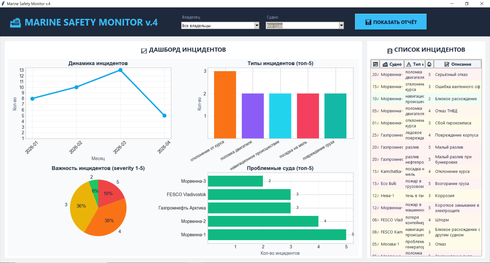
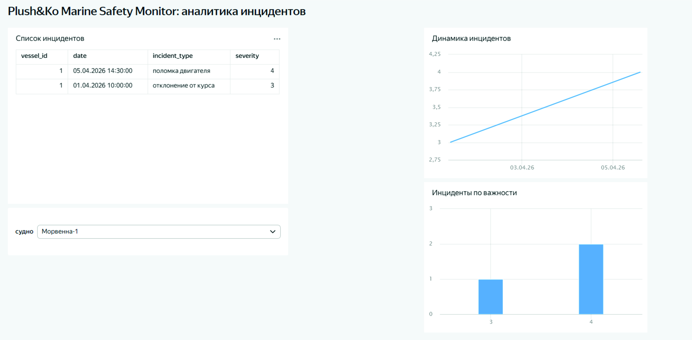

Версия 4.0: полностью автономная система аналитики безопасности для морского и речного флота.
Не требует браузера, облачных сервисов и постоянного подключения к интернету.
Бумажные акты, Excel-файлы, журналы — данные разбросаны и не дают единой картины.
На подготовку сводного отчёта о безопасности по флоту уходит до 2 рабочих дней.
Аналитика запаздывает, проблемные суда и экипажи выявляются слишком поздно.
ETL-процессор на Python загружает и очищает данные из любых источников (Excel, CSV).
SQLite для старта, с возможностью перехода на PostgreSQL. История всех инцидентов в одном месте.
Собственная система визуализации (matplotlib + Tkinter). Не требует браузера и интернета.
Работает как сервер в вашей сети или как .exe файл на компьютере. Данные под вашим контролем.


Приложение для планшета, позволяющее инспектору на борту фиксировать нарушения (фото, подпись, чек‑лист) и мгновенно отправлять в центральную базу.
На основе накопленных данных система подсвечивает суда и экипажи с повышенной вероятностью инцидента.
Рассчитывает оптимальную скорость для рейса. Экономия топлива — до 10–15%.
Автоматическая выгрузка отчётности в форматах XML, PDF, Excel для Минтранса и Ространснадзора.
Подана заявка на регистрацию программы для ЭВМ в Роспатенте (№ 2026600310).
Развёртывание на вашей инфраструктуре или как .exe. Данные не покидают ваш контур.
Вы предоставляете один файл с данными (Excel/CSV) — за 2–3 дня вы получаете работающий дашборд. Никаких обязательств, данные не покидают ваш контур.
Заказать пилотАлександр Щепетильников
📞 Тел.: +7 (914) 679-70-13
📧 Email: shepet007@mail.ru